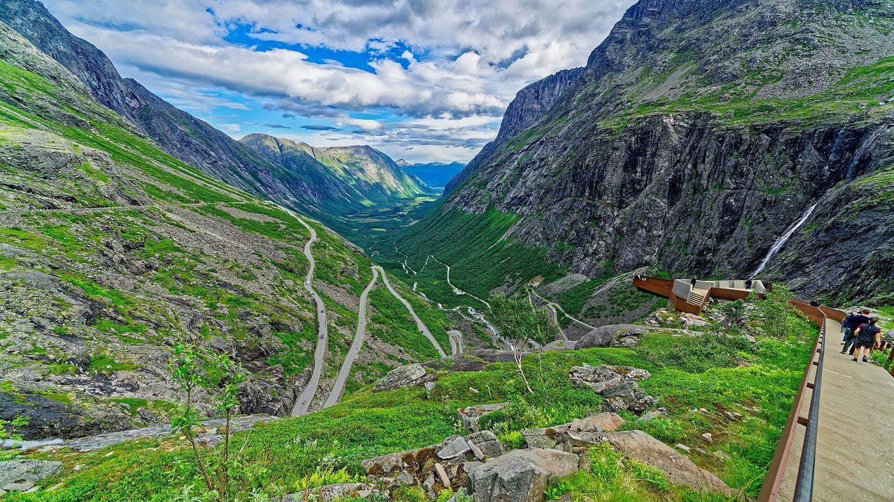

Race, Trollstigen

Behind
Best +0:01
371W
Target 418 W-47 W
- Cadence
- 87rpm
- Heart
- 140bpm
- Speed
- 26.5km/h
Work12 of 17
1:48
Next: · 2:00 at level 21
+7.2%
481 m climbed
7.28 km
18
Resistance / 32
Solo races your best-time ghost: position reads Ahead or Behind, and solo alone gets a Pause button. Frozen at 18:12.